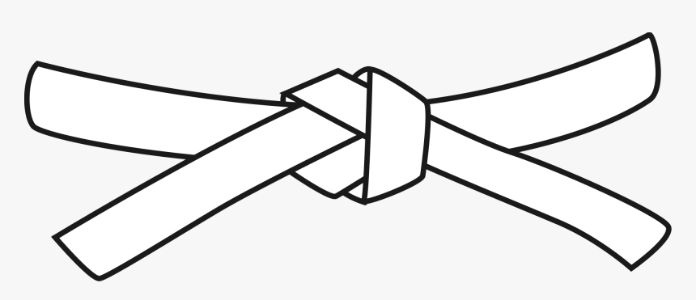
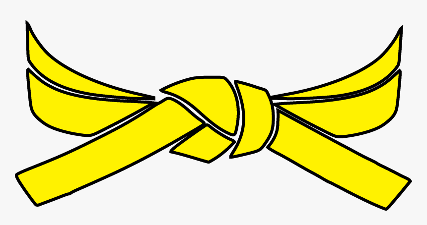
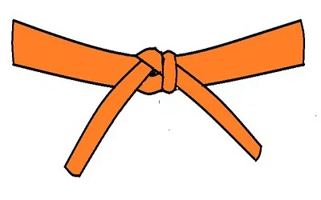
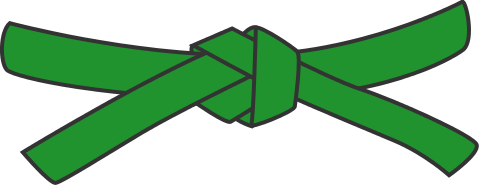
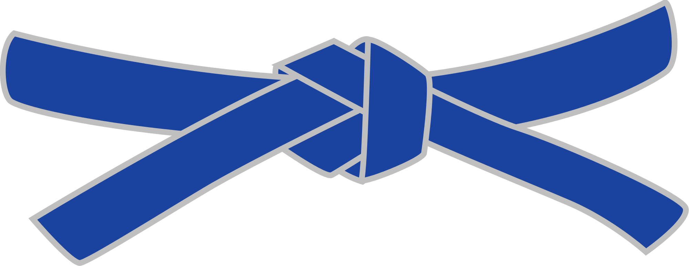
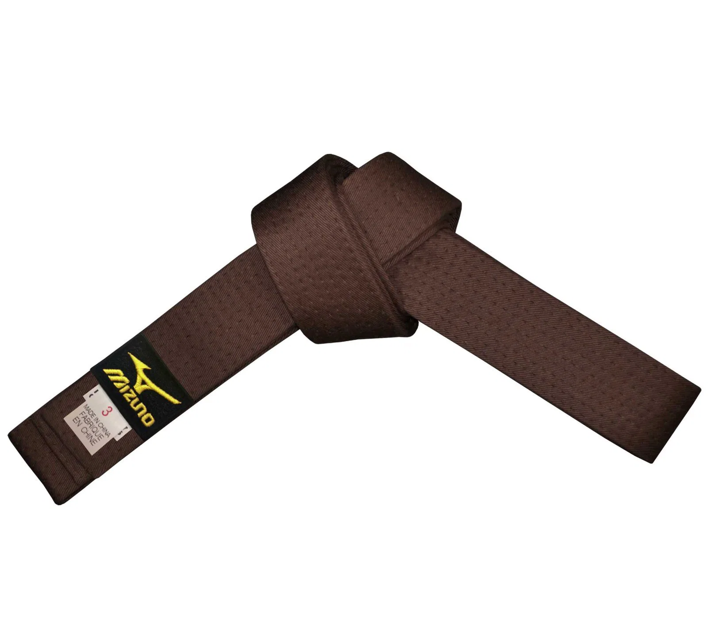
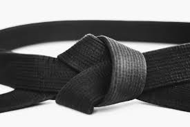
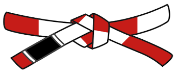
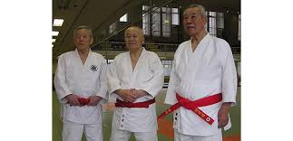

Що таке Дзюдо?
Дзюдо (яп. 柔道, «шлях м'якості») — це японське бойове мистецтво, філософія та спортивне єдиноборство без зброї. На відміну від інших видів боротьби, де акцент робиться на грубій силі, в дзюдо головним є використання сили супротивника проти нього самого.
Історія створення
Дзюдо було засноване Дзіґоро Кано у 1882 році в Японії. Кано вивчав стародавні школи джиу-джитсу і відібрав з них найефективніші техніки, прибравши найбільш травмонебезпечні. Так з'явився «Кодокан» — перша школа дзюдо, яка згодом перетворилася на глобальний спортивний рух.
Основні принципи
В основі дзюдо лежать два головні принципи:
- Seiryoku Zenyo (Максимальна ефективність) — досягнення мети з мінімальними витратами енергії. Це вміння керувати своїми рухами та емоціями.
- Jita Kyoei (Взаємна допомога та процвітання) — тренування має приносити користь не лише тобі, а й твоєму партнеру. Це розвиток поваги та дисципліни.
Градація поясів (Кю та Дани)
Шлях дзюдоїста від новачка до майстра відображається кольором його пояса (обі).
| Колір пояса | Назва | Рівень |
|---|---|---|
 | Rokkyū | Початковий рівень |
 | Gokyū | Перші кроки |
 | Yonkyū | Початкова підготовка |
 | Sankyū | Середній рівень |
 | Nikyū | Підготовка до майстерності |
 | Ikkyū | Підготовка до майстерності |
 | Shodan to Godan | Майстер (1-5 Дан) |
 | Rokudan to Hachidan | Гранд-майстер (6-8 Дан) |
 | Kudan to Jūdan | Вищий майстер (9-10 Дан) |
Про проєкт
Ця сторінка створена в рамках лабораторної роботи з веб-технологій. Використано три способи підключення CSS-стилів:
- Inline — безпосередньо в атрибуті style (як у заголовку вище).
- Internal — через тег
<style>у<head>. - External — через файл
css/style.css.